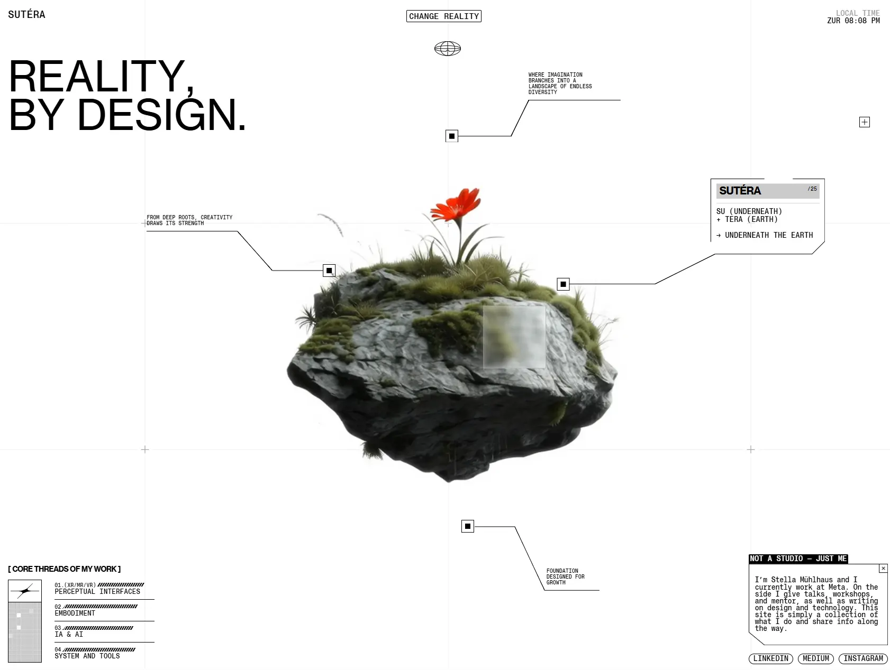

Сайт 013 · Портфолио · Личные сайты и портфолио
Sutéra
10 место в чемпионате · 78 / 100
Screens/013.webp, доминирующий цвет занимает 87% кадра.Что это
Личный одностраничный сайт-портфолио Стеллы Мюльхаус о дизайне взаимодействия человека и машины: на нём прямо сказано «Not a studio — just me» и «I currently work at Meta». Внутри четыре направления работы, девять проектов (три из них про Meta), раздел о преподавании и публикациях в ETH Zürich, ZHdK и RCA, контакты только через соцсети. Технически это Nuxt 3 с серверным рендерингом на Vercel и контентом из headless-CMS Prismic; визуальный слой построен на GSAP со ScrollTrigger и SplitText, гладком скролле Lenis и WebGL-сцене, оформленной как инженерный чертёж с кастомным курсором-картинкой.
Описание владельца коллекции: Вдохновляющий сайт-портфолио Стеллы Мюльхаус — дизайнера из Meta, которая занимается проектированием интерфейсов для коммуникации человека и ИИ.
Чем интересен
- Сайт умышленно имитирует инженерный чертёж: в центре фотореалистичный 3D-остров в WebGL, вокруг — тонкие выноски с квадратными узлами и подписи в квадратных скобках чертёжным шрифтом.
- Четыре гарнитуры разведены по ролям через CSS-переменные — интерфейс, лаборатория, чертёж и кибер-акцент — это даёт три визуальных слоя текста на одной странице.
- Вся типографика и отступы построены на вьюпортных единицах и на медиазапросах по соотношению сторон, а не на классических пиксельных брейкпоинтах.
- Кастомный курсор — не CSS-фигура, а две картинки с заданной горячей точкой, включаемые только при точном указателе.
- Расстановка элементов «чертежа» приходит из CMS: в данных Prismic у каждой картинки хранятся координаты, масштаб и фон.
- Сайт одностраничный: все двенадцать проверенных внутренних маршрутов отдают 404, карты сайта нет, навигация держится только на скролле.
- Юридической информации нет вовсе — ни импрессума, ни политики, ни cookie-баннера, что для швейцарского сайта заметно; счётчиков аналитики тоже нет.
Все 30 номинаций сайта
Итог: 78 / 100 по профилю «Портфолио и агентство». Первых мест в критериях: 9 (единолично 2, разделено 7), призовых мест: 10. Строки отсортированы по месту в номинации, ссылка ведёт к номинации в чемпионате.
- Эстетика и оригинальность
- Инновационность в дизайне
- Уникальность и экспертность
- Экспертность
- Креативность в решении задач
- Уникальность предложения
- Соответствие бренду и ЦА
- Целостность
- Актуальность
- Попадание в номинацию
- Удобство интерфейса
- Соответствие заявленному
- Современные технологии
- Мультимедийность
- Стабильность
- Релевантность и полнота
- Грамотность
- Социальная ответственность
- Интерактивные элементы
- Адаптивность
- Читабельность
- Отзывы и рейтинги
- Интеграции
- Доступность (a11y)
- SEO-оптимизация
- Безопасность
- Полнота реализации
- Работа форм и поиска
- Интуитивность навигации
- Прозрачность
Обоснования по разделам
- Юзабилити и UX
- Интерфейс читается как лабораторная панель с часами и выносками, но навигации как таковой нет: сайт одностраничный, проверенные внутренние адреса отдают 404, перемещение идёт только скроллом.
- Дизайн и визуальное восприятие
- Одна из сильнейших работ подборки по композиции: фотореалистичный 3D-объект в центре, чертёжные выноски к нему, четыре шрифта в разных ролях и почти белое поле с координатной сеткой.
- Контент
- Девять проектов, четыре направления, преподавание в ETH Zürich, ZHdK и RCA, публикация в Meta Horizon HIG; личные детали вроде татуировки-измерителя добавляют характер.
- Техническое качество
- Nuxt с серверным рендерингом и Prismic под контентом, HTTPS с долгим HSTS; из минусов — нет карты сайта и микроразметки, а юридической информации нет вовсе.
- Функциональность и интерактивность
- Форм, поиска и почты нет, связаться можно только через соцсети; интеграции при этом на месте — CMS, оптимизация картинок и клубные плагины анимации.
- Доверие и репутация
- Сайт швейцарского автора без импрессума и политики конфиденциальности — заметный минус; экспертиза подтверждается проектами Meta и преподаванием.
- Инновации и технологичность
- WebGL-сцена, GSAP с платным плагином SplitText, Lenis и типографика на вьюпортных единицах с медиазапросами по соотношению сторон.
- Соответствие категории и целям
- Портфолио дизайнера-исследователя показывает проекты и уровень мышления, но не даёт ни одного способа связаться напрямую.
Что не проверено
- Браузерная проверка не выполнялась: реальные цвета, поведение WebGL-сцены, работа кастомного курсора, анимации и доступность не измерялись.
- Точные версии Three.js, Lenis и Tailwind не определены — в бандлах нет читаемых строк версии; версия GSAP определена точно (3.13.0).
- Vercel Speed Insights не подтверждён: эндпоинт отвечает 200, но тега скрипта в разметке нет.
- Юридические страницы могут появляться в модальном окне или после выполнения JS — серверный HTML такого состояния не отражает.
- Наличие почты и формы обратной связи отрицать нельзя: их нет только в отданном HTML.
- Должность «Human-machine Interaction Design Lead» в разметке напрямую не привязана к Meta, хотя работа в Meta заявлена отдельным предложением.
- Карты сайта нет, поэтому список страниц получен перебором маршрутов — неочевидные адреса могли остаться незамеченными.
- Внешние ссылки на LinkedIn и Medium заблокировали автоматический запрос (антибот), это не признак недоступности.
- Скриншот 013.webp показывает только первый экран — разделы ниже описаны по разметке, а не по изображению.
Паспорт
- Домен
- sutera.ch
- Тип сайта
- Портфолио
- Категории
- Личные сайты и портфолио
- Подкатегории
- Дизайнер
- Для кого
- Дизайнерам, Продуктовым командам, Разработчикам
- Стиль
- Утилитарный техно, Минимализм, Редакционный
- Приёмы
- WebGL и 3D, Скроллителлинг, Кастомный курсор, Прелоадер, Анимация типографики, Бегущая строка
- Технологии
- Nuxt 3 (Vue 3) с серверным рендерингом, Vercel, Prismic (headless CMS), GSAP 3.13.0 со ScrollTrigger и SplitText, Lenis, Three.js и WebGL, Tailwind (сборка вида v4), Четыре self-hosted шрифта
- Язык
- Английский
- Страна
- Швейцария, Цюрих — «Currently in Zurich, Switzerland» и живые часы с поясом ZUR
- Автор
- Стелла Мюльхаус (Stella Mühlhaus); сайт сделан студией Okey Studio — указано в подвале
- Год
- 2025
- Добавлен
- 2026-10-01
Палитра
- #FFFFFF — 87% кадра
- #161714 — 5% кадра
- #626458 — 2% кадра
- #C9CACA — 2% кадра
- #404335 — 2% кадра
измерено из Screens/013.webp (белый фон занимает 87% кадра); токены сайта: чёрный #000000, белый #FFFFFF, серый #9E9E9E, синий #344DBB, мятный #59E7CA, утилитарные #293CA9 и #B5E9FF
- Режим
- Светлая
- Цвет фона
- Нейтральный
Чемпионат
10 место из 31 · 78 / 100 · первых мест 9 из 30 · сильнее всего: Эстетика и оригинальность (1 место)
- Эстетика и оригинальность — 1 место, 10 баллов
- Соответствие бренду и ЦА — 1 место, 9 баллов
- Целостность — 1 место, 9 баллов
- Инновационность в дизайне — 1 место, 10 баллов
- Актуальность — 1 место, 9 баллов
- Уникальность и экспертность — 1 место, 10 баллов
- Экспертность — 1 место, 10 баллов
- Креативность в решении задач — 1 место, 10 баллов
- Уникальность предложения — 1 место, 10 баллов
Технические факты
- HTTPS
- да
- Meta viewport
- да
- Title
- Sutéra - Reality By Design (26 симв.)
- Description
- I design systems that shape how humans and machines connect. From robotic extensions to perceptual interfaces, my work lives at the intersection of biology and technology. (171 симв.)
- Open Graph
- да
- Структурированные данные
- нет
- Sitemap
- нет: /sitemap.xml отдаёт 404
- Robots
- есть: Disallow: — всё открыто, ссылки на sitemap нет
- Аналитика
- счётчиков не найдено
- Проверено ссылок
- 40
- Битые ссылки
- https://www.sutera.ch/sitemap.xml — 404
внутренних ссылок на сайте нет вообще: проверенные маршруты вроде /about, /work и /contact отдают 404 — сайт одностраничный - Контакты
- почты, телефона и формы нет; связь только через LinkedIn, Instagram и Medium
- Юридическая информация
- юридической информации нет: ни импрессума, ни политики конфиденциальности, ни cookie-баннера; единственная правовая строка — кредит «Sutéra website 2025 — made by Okey Studio»
Технологии с доказательствами
- Nuxt 3 (Vue 3) с серверным рендерингом — заголовок X-Powered-By: Nuxt, объект window.__NUXT__ в конце HTML, ассеты /_nuxt/; HTML приходит полным (231 390 байт) при X-Vercel-Cache: MISS
- Vercel — заголовки Server: Vercel, X-Vercel-Cache, X-Vercel-Id; оптимизация картинок через /_vercel/image
- Prismic (headless CMS) — preconnect на sutera.cdn.prismic.io и images.prismic.io, скрипт prismic.min.js?repo=sutera, все картинки с images.prismic.io/sutera, конфиг в window.__NUXT__.config.public.prismic
- GSAP 3.13.0 со ScrollTrigger и SplitText — в бандле строка version:"3.13.0"; класс SplitText с this.isSplit и предупреждением о не загруженных шрифтах
- Lenis — 31 вхождение lenis в бандле, window.lenisVersion и событие lenisScrollEnd
- Three.js и WebGL — 32 вхождения THREE, 127 webgl, 24 shader; код WebGLRenderer с проверкой расширений
- Tailwind (сборка вида v4) — слои @layer theme/base/components/utilities и 37 объявлений @property --tw-*; точная версия не заявлена
- Четыре self-hosted шрифта — @font-face для PP Neue Montreal, Neue Haas Grotesk Text, Bitter и Bruno Ace SC, файлы лежат локально в /fonts/
Что смотреть в первую очередь
Смотреть как пример «инженерного чертежа» в вебе: 3D-объект в центре, выноски-аннотации к нему, четыре шрифта в разных ролях и типографика на вьюпортных единицах.
Похожие в коллекции
- Leo Parpeix — общее: Личные сайты и портфолио, Минимализм, Редакционный, WebGL и 3D, Кастомный курсор, Скроллителлинг, Прелоадер
- Utopia Tokyo — общее: Прелоадер, Кастомный курсор, WebGL и 3D, Анимация типографики, Бегущая строка
- Ironhill — общее: Редакционный, Скроллителлинг, WebGL и 3D, Кастомный курсор, Прелоадер
- Aevion — общее: Утилитарный техно, Минимализм, WebGL и 3D, Скроллителлинг, Прелоадер